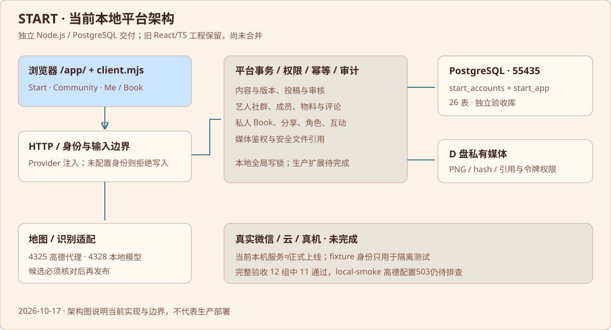
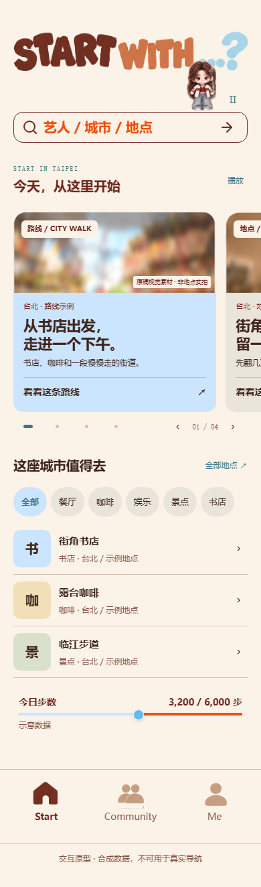
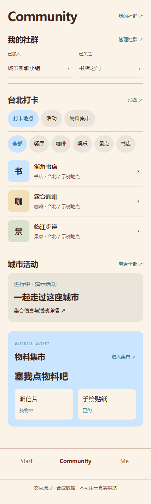
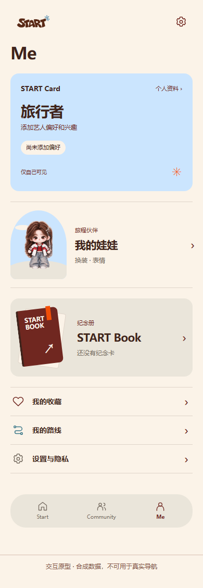
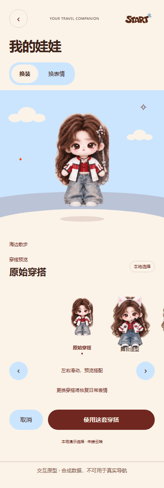
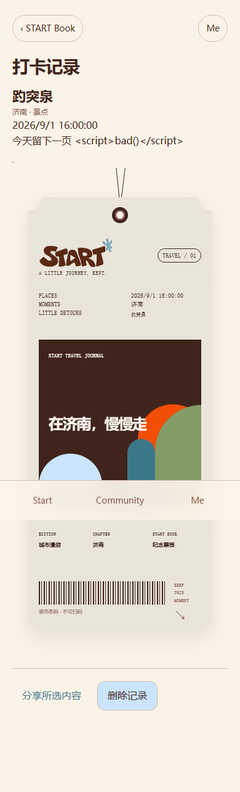
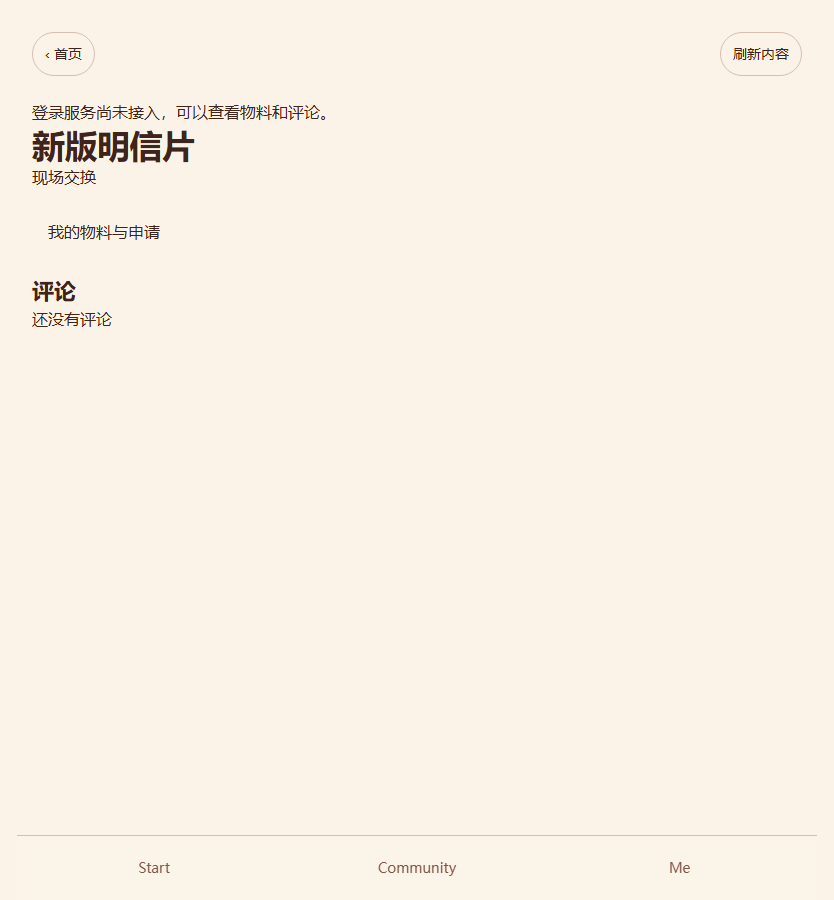
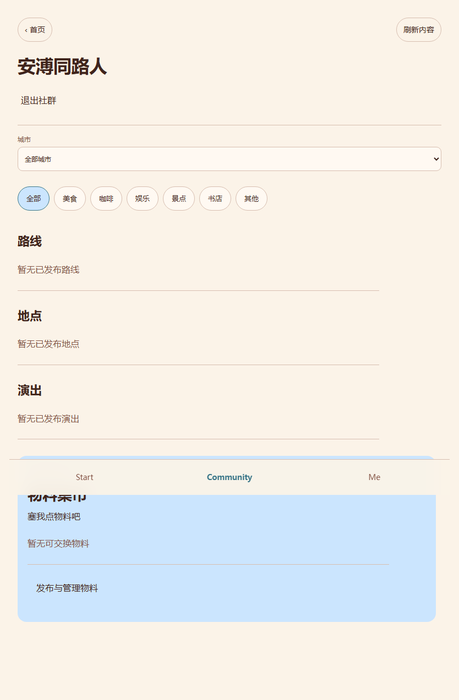

START 项目交接包 · 2026-10-17
本包用于让新 agent 理解并继续当前项目。它包含现役代码快照、历史工程参考、产品规则、技术与数据文档、测试证据、视觉资产和困难清单。它不是已上线产品，也不是包含运行库及私人数据的整机备份。
先读结论
START 是围绕艺人兴趣的城市打卡与旅行产品，第一阶段为 Mobile Web，后续考虑微信小程序。主导航固定为 Start / Community / Me。已经建立本地 Node.js + PostgreSQL 平台，接通公开发现、地点/路线投稿、社群成员、物料集市和私人 Book 的一批界面；真实微信登录、云端部署、真机定位导航、完整 Me/娃娃/推荐接线仍未完成。
现役实现位于原机 D:/Downloads/fan-route-codex-handoff/deliveries/START_LOCAL_PLATFORM_2026-10-08。本包对应快照位于 source/workspace/deliveries/START_LOCAL_PLATFORM_2026-10-08。不要误把 .worktrees/start-slice-001 或 10 月 6 日视觉原型当成已合并最新 Book 的主工程。
2026-10-17 已重新运行整套验收：12 组中 11 组通过，local-smoke 失败于高德配置转发返回 503。本地平台测试 55/55 通过；Book 浏览器 20 检查通过，使用隔离真实数据库和测试身份。不能据此称真实微信用户已可使用。详见 验收报告。
阅读顺序
- 产品规则与架构：产品目标、页面归属、用户已确定规则。
- 当前成果与进度：界面、后端、测试与真实可用分别记录。
- 技术架构、接口合同、数据与资产。
- 开发过程与决策、验收。
- 下一步计划、困难与风险、启动与接手。
- 视觉与截图、skill 与协作流程、打包范围。
- 开始执行前阅读 给下一位 agent 的指令。
也可以直接打开 START_HANDOFF.html，离线阅读全部现役说明及图片。原始 Markdown 和源文件更适合 agent 检索。
状态与证据优先级
本包 docs/ 是 2026-10-17 的现役说明；evidence/latest 是本次复制的验收证据；references/ 和 source 内旧 README/计划是历史记录。发现冲突时优先最新用户明确决定，其次当前代码和当前测试，再看旧文档。旧文档里的“待确认”“接口未接通”“六组全绿”等不能直接作为今天的状态。
本包快照文件已逐一与本机来源核对，见 evidence/current/SNAPSHOT_VERIFICATION.json；MANIFEST_SHA256.json 用于核对包内文件。正式密钥、账号原始身份、私人照片、数据库原始目录、模型和安装运行库不在包中，详见打包范围。
产品定义与已确认规则
产品目标
START 帮用户围绕喜爱的艺人和音乐兴趣，在城市中发现打卡点、路线及演出，加入对应社群，参与线下物料交换，并留下自己的旅行记忆。第一市场为中国大陆，先做 Mobile Web，再考虑微信小程序及 App；不同端应共用业务后端与实体 ID。
核心发现路径是“搜索艺人 → 选择城市 → 查看地点与路线 → 按类别筛选”。地点集合是独立内容，不要求排成路线；路线有独立标题、主题艺人和有序站点。一个地点可有多个艺人的不同同款证据，点进地点能看到哪些艺人来过。加入艺人社群表示兴趣，应影响未来推荐排序，但不限制未加入者浏览公开地点。
信息结构
| 一级入口 | 产品内容 | 二级去向 |
|---|---|---|
| Start | 城市、搜索、紧凑自动滚动推荐、地点目录、陪伴娃娃 | 艺人/地点/路线/演出详情，地图与出行入口 |
| Community | 我的社群、艺人城市地点与路线、活动、物料集市 | 社群详情、演出场馆、物料详情、投稿与评论 |
| Me | START Card、我的娃娃、START Book、个人资料、收藏、投稿、通知与设置 | 唯一角色与装扮、私人记录、选择分享、账号隐私 |
首页滚动推荐不替代原有列表；不恢复四块固定分类大入口，也不因首页改版删掉 Community 物料集市。分类属于列表筛选。现有枚举为美食、咖啡、娱乐、景点、书店、其他；美食下细分餐厅、小吃等是产品方向，当前后端未建立完整二级分类体系。
首页预期结合当前城市和用户兴趣：例如人在上海且喜欢某艺人/流行音乐，应优先推荐上海相关地点、路线、演出，以及有可靠音乐标签的店铺。当前仅有基础后端排序和公开首页，不能称完整个性化已落地。不要写“推荐理由”；内容文案可用“打卡同款”。
角色与权限
公开浏览不必登录；投稿、加入社群、评论、物料申请、私人 Book 等需要经过服务端确认的身份。微信登录优先，手机号不强制。真实微信身份尚未配置，浏览器测试身份仅用于隔离验收。
平台管理员可以参与内容建设：新增/编辑艺人、地点、路线、演出、图片与首页内容，审核用户投稿，处理纠错，保留草稿、版本、发布与审计。社群管理员仅维护简介、公告和成员；其他修改、转让、解散向平台申请。一个艺人只对应一个社群，用户申请创建、平台审批；同城市不另外创建重复艺人社群。
地点、同款与路线投稿
一次投稿一个艺人。艺人选择单列，不把艺人名称塞进地点名称。同一个地点复用 placeId，艺人同款作为独立贡献，不能因新投稿覆盖旧艺人证据。投稿可带来源、照片、同款描述及著名机位。发布前由平台管理员审核；用户可补充或纠错。
新增地点应从地图搜索/选点获取候选，而非只能选择已有站点。用户也可以上传路线：按顺序组织站点，支持地图新增点和已有点；卡片拖动排序，不使用“上移/下移”作为主交互。路线和新站点审核须原子完成，失败全量回滚；不得把模型识别候选直接当成已确认 POI。
文字识别入口接受用户自己粘贴的资料，抽取候选地点，用户核对名称、城市、地图位置和来源。不是自动抓取第三方平台，也不是自动宣称拥有内容版权。
物料集市最终规则
归属 Community。页面大标题“塞我点物料吧”，分区“物料集市”；进行中等状态按钮偏蓝色。发布者自行编辑、撤下、恢复物料。交换采用申请与接受，不含支付、不做完整 IM；联系方式由双方在评论中自行决定是否交换，不再有独立联系人设置/获取功能。
平台不追踪或认证交换完成；接受申请不等于完成。演出改期/取消不自动改物料状态，也不向发布者发送演出变更关联提醒。普通交换申请与接受通知仍保留。旧 contacts 表仅保留兼容历史，现役入口已停用。
私人记忆与娃娃
打卡允许自由记录、重复记录和补记过去时间，不验证到场；未来时间拒绝。打卡、照片、票根、Book 默认仅自己可见。分享仅公开用户勾选记录及字段，可撤销；删除记录会使关联分享失效，不自动公开整个 Book。分享目的地、默认有效期和长期保留期限未最终确定，不能擅自加自动删除规则。
娃娃是陪伴载体，产品名“我的娃娃”。首次在男娃/女娃中自选一个，一个账号只能一个身份；提供服装和表情，配饰暂缓。保持原始比例和角色身份，不留其他人物头发，不做小卡外框；背景可动态，动作需适度、支持 reduced-motion。不增加喂养、饥饿、EXP、洗澡等游戏养成系统。
不扩展的边界
没有独立 Go Tab，不做拼房、复杂 Together、完整聊天 IM 或支付交易；不要把产品改为地图换皮、闲置交易市场或泛社交信息流。云付费、真实身份、公开部署、内容版权与真机验收需要对应配置和验证，不能由“继续开发”推断为已完成。
当前开发成果与进度
状态截点：2026-10-17。本表结合源文件、当前数据库元数据和本次重新运行的验收；“后端完成”只表示对应本地实现和测试，不表示生产级服务或所有界面已完工。
| 模块 | 当前代码与成果 | 已有证据 | 仍未完成 |
|---|---|---|---|
| 本地业务基础 | PostgreSQL 账号与业务共26表；事务、权限、幂等、审计、私有媒体 | 55项平台/HTTP/合同测试；备份恢复组 | 生产角色、安全配置、迁移版本化、分页、并发扩展 |
| 公开发现 | 当前首页、艺人/城市/分类、地点同款、路线与演出场馆读取统一 API | public-browser、实际预览检查通过 | 真实内容规模、首页完整个性化、地图视图闭环 |
| 地点/路线投稿 | 单艺人、照片、地图候选、文字识别核对、路线新旧站点及拖动排序 | private-browser、路线领域测试通过 | 真实身份写入；真实设备的触控与导航验收 |
| 内容后台 | 内容库/地点/路线/演出/素材/审核六视图接本地库；编辑与发布分离 | 后台浏览器组通过 | 社群管理、纠错、版本恢复、首页配置等完整后台 UI |
| 社群 | 申请/审批、单艺人唯一、加入/退出、我的社群、有限管理接口 | community-browser及并发/权限测试 | 正式成员账号、全套社群管理界面 |
| 物料集市 | 发布/编辑、照片、撤下/恢复、申请/接受/撤回、公开评论/本人删除 | market-browser 13检查（测试传输）；API真实数据库测试 | 实际登录；更多边界与完整内容审核运营策略 |
| 私人 Book | 地点入口、新建记录、列表、详情、私有照片、票根、选择分享/撤销/删除 | book-browser 20检查，使用隔离真实DB；分享元数据权限测试 | 照片票根版视觉复核、完整独立审查、记录编辑/图片导出、路线完成纪念闭环 |
| Me | 当前“我的工作台”聚合资料/社群/投稿/物料/Book/娃娃/通知，保留批准稿入口 | private-browser与导航检查 | 当前页面仍未忠实整合已确认 Me 视觉；资料/设置交互、真实账号 |
| 我的娃娃 | 后端首次身份锁定、五种服装状态、四种表情；旧原型保留场景与轻动作 | 后端测试、旧原型画幅/动效记录 | 新前台与账号状态接线；男娃透明正式素材、表情服装兼容及更完整动作 |
| 推荐/通知/收藏 | 基础后端接口与部分只读展示 | 平台测试 | 首页按真实兴趣与城市调用排序；通知已读/跳转、收藏交互闭环 |
| 高德/文字识别 | 固定上游代理、POI候选、GCJ-02；本地Qwen候选提取及核对 | 既有集成测试通过；10月16日真实搜索/模型检查成功记录 | 本次local-smoke在高德配置503处失败；当前服务恢复与导航真机 |
| Open Design | 过去有独立预览同步脚本与截图；原生应用已安装 | 历史同步记录、连接失败证据 | 当前可编辑工作区/旧预览恢复；不能声称本轮已在其画布完成稿件 |
| 微信/云/小程序 | 技术讨论与接入文档；Provider边界预留 | authConfigured=false、cloudConnected=false | 微信AppID/后端身份、云DB/存储/HTTPS/域名、小程序客户端及上线验收 |
当前最易误读的三点
一是视觉原型与数据前台同时存在。10月6日的 HOME/ME/DOLL 截图体现批准方向，当前 /app/ 则承载新 API 的独立接线；看到旧稿不代表其会话数据已经改为数据库。二是接口先于界面，社群管理、收藏、通知、资料与娃娃等后端可用不等于产品入口完整。三是本机验收库内容只有测试/示例级规模，不能拿其中坐标与演出日期作为真实推荐内容。
本批 Book 的具体终态
代码已经进入 public-ui/book.mjs，通过 public.js 路由接线。新建记录失败后保留表单与已上传照片缓存，同一载荷重试保留幂等键；详情通过鉴权读取私有图片，离开页面释放 object URL；分享按字段预览并创建令牌链接；分享管理刷新后可撤销。后端新增 privateQuery('shares')，只返回本人分享元数据。
Book 仍需视觉和整批审查收尾。当前票根使用批准的无照片几何版结构，照片另列画廊，尚未完成把选中照片作为票根封面的版本；本批截图不能当成最终照片版确认。完整离页后返回等新增分支覆盖仍需复核，不能仅凭20个检查推断所有状态已覆盖。
当前项目没有可诚实给出的单一“完成百分比”。本地基础和多条业务链路已实现；生产登录、部署、内容运营、设备验收和若干前台仍处于明确待办。
技术架构与代码地图

当前实际架构
现役平台是原工作区外的独立 Node.js ES Module 交付，采用模块化单体思路。前台是原生浏览器 JavaScript、HTML、CSS，后端为 node:http + pg + Zod，数据库 PostgreSQL。旧工程是 React/TypeScript/Vite + worker 等代码，保留在多个 Git 工作树中，尚未与最新独立交付统一。
浏览器 /app/（公开页面、投稿、Community、Market、Book）
│ createPlatformClient
▼
src/http.mjs（身份验证入口、请求限制、JSON/媒体/静态路由）
│
src/platform.mjs（事务、幂等、读模型、跨模块调度）
├─ content.mjs 草稿/发布/版本、投稿/审核、地点与路线
├─ community.mjs 社群创建/唯一性/成员/有限管理
├─ market.mjs 物料/申请/状态/公开评论
├─ personal.mjs 资料、Book/分享、娃娃、收藏/通知、注销
├─ media.mjs + public-media.mjs 私有文件与公开引用鉴权
└─ context.mjs 当前账号、管理员、所有权和关联实体检查
│
PostgreSQL start_accounts + start_app + D盘媒体文件
src/integrations.mjs
└─ 复用 Admin Preview Server
├─ localhost:4325 → 高德固定域名/路径代理
└─ localhost:4328 → 本地Qwen/llama-server候选提取
身份在 createServer({verifyBearer, repository}) 注入；当前 server.mjs 未配置 verifyBearer，因此实际服务写入拒绝，不能用客户端传入 userId 或角色字段替代。地图与识别通过固定本地适配层调用，Provider 目标是解耦，但现有文件仍跨目录导入，尚未形成完全独立可发布的包。
现役文件职责
| 文件/目录（相对现役目录） | 责任 |
|---|---|
| boot.mjs | 启动已存在PG集群，核对55435实际数据目录，建立验收DB后导入server |
| server.mjs | 执行schema、清理已注销用户私有媒体、组装HTTP服务，监听4330 |
| src/runtime.mjs | 从旧工作树 node_modules 解析 pg/zod；迁机必须处理 |
| src/contracts.mjs | 所有命令的输入白名单、长度/枚举/ID/坐标完整性验证 |
| src/platform.mjs | execute事务、读查询、推荐、分享令牌解析、home配置读取 |
| src/context.mjs | 数据存在性、已发布/草稿、用户所有权、管理员检查及通知写入 |
| src/content.mjs | 艺人/地点/路线/演出保存发布；投稿/纠错/批量导入及审核 |
| src/community.mjs | 创建申请、审批、成员关系、管理员修改范围、转让/解散申请 |
| src/market.mjs | 物料发布编辑、状态、申请接受撤回、公开评论与删除 |
| src/personal.mjs | 资料、打卡历史快照、按字段分享、唯一角色、注销清理 |
| src/media.mjs | PNG上传/尺寸/魔数/解码、文件安全路径、图片鉴权读取 |
| src/public-media.mjs | 图片被哪些公开内容/审核对象引用的判定 |
| src/http.mjs | 请求Host/Origin、JSON大小、身份、HTTP错误码与所有接口 |
| src/static.mjs | 当前静态文件及旧批准稿白名单回退，阻止路径逃逸 |
| client.mjs | 浏览器API、鉴权令牌注入点、照片转PNG、私有图片blobURL |
| public-ui/public.js | 当前hash路由、统一公开目录、页面编排与模块挂载 |
| public-ui/private-views.mjs | Me只读聚合、地点/路线投稿表单结构 |
| public-ui/submission-tools.mjs | 地图选点、文字候选核对、站点添加与草稿状态 |
| public-ui/route-stops.mjs | 本地SortableJS驱动拖动、键盘替代操作与有序站点合同 |
| public-ui/community-membership.mjs | 加入/退出、我的社群、异步响应与重复操作处理 |
| public-ui/market.mjs | 发布/编辑/状态、申请与评论界面 |
| public-ui/book.mjs | 新建、私人列表/详情、票根、分享选择/预览/撤销/删除 |
| ui/ | 当前后台独立接线副本，不替换原审批稿 |
| tests/ + acceptance.mjs | DB/HTTP/浏览器/备份/旧原型/集成总验收 |
共享实体与联通方式
content 表统一承载 artist/place/route/event，kind区分类型，draft和published分开，修改递增version并留revisions。地点用poi_id去重；contributions记录“某艺人在某地点的证据”。路线 placeIds 保持顺序；演出 artistIds + placeId 绑定艺人和场馆；社群 artist_id 唯一；物料同时引用community/artist/可选event/place；打卡引用place并保存快照。
这使同一个placeId可出现在艺人列表、社群城市地点、路线站点、演出场馆及私人记录里。前端通过统一公开查询与实体详情读取，不为每页复制地点档案。已保存的Book快照不随公共地点撤回或改名被抹掉。
事务与权限
命令先验证schema；事务内先取全局advisory lock，再锁定有效账号。幂等键按user/operation/key存储，重复同载荷返回旧结果，不同载荷冲突。审核新路线、站点复用和贡献写入在同一事务；失败回滚。公开查询只序列化白名单字段，私有查询按当前账号过滤。
这是本地正确性优先方案。全局写锁、部分全表读后内存筛选、无分页、开发trust用户和单个大platform模块都是上线前需处理的成本，不应直接扩为微服务。首先整理依赖和部署边界，再按负载细化索引、分页和锁范围。
Git、目录与版本身份
本地外层根不是Git仓库。旧主仓库和工作树见 evidence/current/GIT_STATE.json：master的HEAD为1def607…；phase-c为45a44b3…；v0.2地图为b9a4623…；角色基线为a8ece97…。这些工作树均存在未提交/未跟踪内容，交接时未重置或清理。
2026-10-17的GitHub同步记录显示私有仓库 happywanderingartist/start 已备份旧主工程/分支；同步记录明确排除重复deliveries。最新本地平台目录没有独立Git提交，因此“GitHub main已备份”不等于包含当前Book/物料增量。本包保存精确源文件快照与哈希，但未替用户合并、提交或推送。
API 与业务合同
本文件描述现役本地接口。完整字段以 source/workspace/deliveries/START_LOCAL_PLATFORM_2026-10-08/src/contracts.mjs 为准；本包另附 data/COMMAND_SCHEMAS.json 供检索。前端统一使用 client.mjs，不把账号ID或管理员标记塞入业务载荷。
HTTP入口
| 方法与路径 | 作用与权限 |
|---|---|
| GET /api/status | 本地DB/身份/云状态，不返回密钥 |
| GET /api/public?artistId=&city=&category= | 公开艺人/地点/路线/演出/社群/物料，筛选键白名单 |
| GET /api/public/{artist,place,route,event,listing}/{id} | 公开详情；listing含公开评论 |
| GET /api/home | 已配置公开内容ID映射，首页尚未完整消费 |
| GET /api/recommend?city= | 可选已验证身份，按同城/兴趣基础排序 |
| GET /api/me/{section} | 当前账号私有查询 |
| GET /api/admin/{content,submissions,applications,requests,audit,revisions,media} | 平台管理员读取；revisions用id参数 |
| POST /api/commands/{operation} | JSON命令，需要真实验证身份和idempotency-key |
| POST /api/media | 鉴权PNG上传，5MB、尺寸与真实解码限制 |
| GET /api/media/{id} | 本人私有/公开引用/审核权限判断后读取 |
| GET /api/share/{token} | 令牌对应的选定记录和字段，撤销/无效时404 |
| GET /api/share/{token}/media/{id} | 必须对应分享中选定照片；不开放整个媒体库 |
| /api/map/、/_AMapService/ | 固定本地代理，POI候选、配置与SDK请求白名单 |
| /api/extract/* | 本地候选识别，POST在现役HTTP层先检查身份 |
private section包括 profile、book、shares、submissions、memberships、notifications、doll、favorites、listings、exchanges、listingComments。shares只返回本人 id/record_ids/fields/revoked，不返回token或token_hash。令牌创建后仅在创建结果显示，刷新后能管理撤销，但不能从metadata恢复完整链接。
命令分组
| 领域 | 命令 | 关键限制 |
|---|---|---|
| 平台内容 | artist.save/place.save/route.save/event.save | 管理员；修改带当前version；图片须属于可使用媒体 |
| 版本/发布 | content.publish/withdraw/restore | draft不自动公开；publish重查关联；restore产生新版本 |
| 导入/首页 | import.places、home.configure | 管理员；30项上限；首页引用必须已公开 |
| 用户投稿 | submission.create、routeSubmission.create、submission.resubmit | 一次一个artist；路线placeIds或stops二选一；拒绝后允许本人修订 |
| 审核/纠错 | submission.review、correction.create/review | 审核平台权限；批准需要checked；退回必须理由 |
| 社群 | community.apply/review/join/edit/member/request/request.review | 唯一artist；简介公告成员有限权限；转让解散需平台审批 |
| 物料 | listing.create/edit/status | 已加入社群发布；artist与社群一致；演出与场馆一致；状态available/withdrawn |
| 评论 | listing.comment、listing.comment.delete | 评论1–1000字，公开物料可评论；本人或平台管理员删除 |
| 交换 | exchange.apply/accept/withdraw | 不允许申请自己的物料；仅发布者接受；参与者撤回；无completed状态 |
| 资料 | profile.update | 昵称1–24字；兴趣/艺人文本上限120；隐私字段白名单 |
| Book | checkin.create/delete | 过去或当前时间；文字3500；最多9照片；票根title≤200/note≤1000 |
| 分享 | share.create/revoke | 本人记录1–30条；fields从snapshot/at/text/ticket/media_ids中选；可撤销 |
| 娃娃 | doll.choose/style | boy/girl首次锁定；outfit original或2–5；neutral/smile/sad/surprised；无配饰 |
| 其他 | favorite.set、notification.read、account.delete | 本人数据；注销confirm=true并清私人内容、禁写 |
典型载荷
{
"placeId": "有效UUID",
"at": "2026-09-01T08:00:00Z",
"text": "今天的私人记录",
"mediaIds": [],
"ticket": {"title":"在济南，慢慢走", "note":"记住今天的阳光。"}
}
上述为 checkin.create 的结构示例，不可将“有效UUID”原样当真实请求。share.create 的结构为 {ids:[checkinId], fields:['snapshot','at']}；不选text/media_ids时实际公开结果不得包含文字和照片。
错误与状态
未配置服务端身份：503 AUTH_NOT_CONFIGURED；缺身份：401 UNAUTHENTICATED；越权：403 FORBIDDEN；失效内容/分享：404 NOT_FOUND；版本/重复载荷冲突：409 CONFLICT；输入错误400、媒体类型415、请求过大413。网络失败不能伪装空列表或成功。
关键状态流：投稿pending → approved/rejected；被拒可补充来源再提交。交换pending → accepted或withdrawn；接受不改变物料完成情况。物料available ↔ withdrawn由发布者选。社群成员joined/followed/removed；单艺人唯一性由DB和服务共同约束。分享有效 → revoked；删除被分享记录也使相关分享失效。
待复核的接口成本
旧contacts读写路由/命令已经停用，表尚在。public listing评论未分页。exchange.apply/accept对隐藏社群/无效发布者的进一步可见性复核应作为新增边界测试。share令牌虽在shares表只存hash，但通用幂等结果会保存创建结果，不能宣称全库绝无明文令牌；生产前需明确敏感结果存储策略。
数据模型、资产与来源
当前数据库
2026-10-17只读核对本机55435的start_acceptance，共26表：3张start_accounts表，23张start_app表。完整表计数在 data/DATABASE_INVENTORY.json；本包不包含账号身份、私人记录或原始数据库文件。
| 数据组 | 表与用途 |
|---|---|
| 账号 | users有效/禁用；auth_identities将provider+subject映射userId；profiles昵称兴趣与隐私 |
| 公共内容 | content统一artist/place/route/event、draft/published/version/poi_id；revisions历史版本 |
| 投稿与证据 | submissions地点/路线投稿；contributions单艺人地点证据；corrections补充纠错 |
| 社群 | community_applications申请；communities艺人唯一社群；memberships；community_requests转让/解散等 |
| 集市 | listings物料；exchanges申请/接受/撤回；listing_comments公开评论；contacts历史兼容表 |
| 私人记忆 | checkins当前地点引用+历史snapshot+文字/媒体/票根；shares记录ID集合与字段、令牌hash、撤销 |
| 角色/互动 | dolls唯一角色/服装/表情；favorites；notifications |
| 运维基础 | media安全文件引用/hash/visibility；audit；idempotency；settings |
artist ─── community(唯一) ─── membership(user)
│ └── listing ─── exchange(requester)
│ └── listing_comment(user)
├── contribution ─── place ─── checkin(user, snapshot) ─── share(selected fields)
├── route ─── ordered placeIds
└── event ─── place(场馆)
└── listing的event/place关联
user ─── profile / doll / media / favorites / notifications
部分关联在JSON字段内，由服务发布/审核时验证，不是全部以关系表FK约束。未来做检索、统计、分页时要考虑规范化，而非直接复制演示数据扩规模。
数据现实性
当前验收库包含4个账号、1个艺人、1个地点、1条路线、1场演出、1个社群，来源是本地验收过程，并不证明真实资料核验或用户上线。公开快照 data/PUBLIC_CATALOG.json 的B001、117/36等是测试占位；路线顺序和取消演出也不能当真实推荐。验收库的Book/分享当时为0条，不影响隔离测试中创建过记录这一事实。
盘点时存在172个start_test_*数据库，之后新验收可能继续增加。它们是保留的测试现场，占空间但本次未清理；任何清理都需先列出范围和用户确认，不能猜测哪些库有独有数据。
高德POI匹配仅输出候选，坐标系采用GCJ-02；设备GPS一般为另一来源，转换与展示需单独验证，不能随意混用。台北/跨境地点的Provider覆盖、分类与导航仍应验证，不能把大陆样例推断为全球覆盖。
本包资产分区
source/workspace/deliveries/START_FINAL_LAYOUT_REVIEW_2026-10-06/assets：当前原型实际使用的Logo、首页、娃娃与服装/表情预览等。assets/character-baseline：锁定角色原始参考、动作候选、QA联系表、角色manifest及验收记录的唯一归档副本。references/MASTER_HANDOFF_2026-10-01/05_VISUAL：原始视觉参考包，含REF_28票根参考以及其他排布/卡片参考。source/workspace/deliveries/START_ROUTE_INTAKE_2026-10-07/references：安溥济南/南京/上海及苏打绿北京/台北五份用户路线图，顺序与来源见同目录manifest。images：文档阅读用的精选截图，标注历史视觉稿和当前API界面。data/ASSET_CATALOG.json：选定资产范围的原始位置、字节、修改时间与SHA-256；它包含盘点范围中的重复引用，具体已打包内容以MANIFEST_SHA256.json为准。
用户临时C盘/微信缓存路径不是稳定资产地址。已归档的路线和参考图应优先从本包路径读取；未归档的旧临时附件不能宣称仍可访问。外部参考图用于设计学习，不表示获得公开商业使用权；生成/裁剪角色候选也不等于已获视觉批准。
角色资产特别说明
女娃R01、男娃R02为身份基准。男娃五套来自原始服装参考，部分是含纸底的局部预览，不是全部已完成透明正式素材。四种表情与服装当前以整图切换为主，未形成任意组合的分层素材；需服装×表情兼容矩阵、边缘透明度和身份一致性验收。禁止擅自重新生成角色替换身份；禁止只为省事退回“男娃只有一套”。
不随包转交的敏感与大型数据
private-config/amap.env、AMAP_WEB_SERVICE_KEY等密钥仅记录变量名和原机存放约定，不读出值。数据库PG目录、私人上传、auth identities、审计原始行、idempotency结果、正式分享令牌均不导出。本地模型GGUF/llama/PG/Chromium/node_modules不打包；文档提供版本/路径与恢复依赖说明。
本包的数据资产交接是“schema + 公开示例 + 元数据 + 原始设计资产 + 位置与恢复说明”，不是生产备份恢复包。需要实际用户数据迁移时，应另做范围明确的受控备份与校验。
开发记录、决定与版本演进
本节整理文件与会话中可核对的阶段，不把早期计划写成已实现事实。历史原文在 source 内的 PLAN/PROGRESS/更新报告，以及 references/MASTER_HANDOFF_2026-10-01。
| 日期/阶段 | 实际推进 | 接手时应保留的判断 |
|---|---|---|
| 9月旧Fan-route | 路线原型、React/TS、worker、地图与角色基线工程 | 有Git历史和未提交内容，不能全盘重置 |
| 10月1日交接 | 按主交接包审查产品、架构、旧工程、参考与验收；规定先研究成熟项目 | 主导航、P0路线投稿/纪念、模块化单体、PG-first及角色边界作为起点 |
| 10月3–4日视觉探索 | 首页、色卡、Logo、Apple Music系统底座；多轮不同方向 | 旧探索稿不是全部现役；用户要求复刻已设计稿与卡片排布，减少AI味 |
| 10月5日分批页面 | 票根、Community、物料、Me、娃娃视觉/实现副本；加入视觉确认关卡 | 批次确认不能推广为后续页面全部获批 |
| 10月6日最终布局方向 | 小型推荐卡+地点目录、Community保留集市；唯一娃娃、服装/表情；男娃五套预览 | 配饰暂停；角色比例/身份与动态保留；美食等细分方向尚未全部落地 |
| 10月7日业务架构 | 艺人→城市→地点与路线；地点多艺人证据；社群唯一；演出场馆/物料联通；管理员参与建设 | 地点与路线并行，不把所有地点硬排路线；管理员可编辑图文，不只是审批 |
| 10月7日地图与文字 | 高德Web/JS服务接入、本地候选识别与人工核对、用户路线参考归档 | 真实候选查询与正式发布分开，复制资料需人工核对 |
| 10月8日本地平台 | 新独立Node/PG业务模块、权限、媒体、后台6视图、备份恢复、跨实体测试 | 不改受保护旧工程，未接真实微信/云；早期42项/6组通过为当时快照 |
| 10月8–11日公开/私有前台 | 统一公开API；Me工作台、地点/路线投稿表单与媒体入口 | 接线视图与批准视觉稿并存，不能将全部原型说成已真实化 |
| 10月14日稳定性/路线 | 模块加载、冷启动、入口、重复提交/草稿等修复；地图新站点随路线审核、原子回滚 | 实际数据链路可测；Open Design预览未恢复；模型结果仍是候选 |
| 10月15日拖动/社群/集市 | Sortable卡片排序及键盘操作，加入/退出持久状态；物料编辑、公开评论、上下架与申请UI | 最新规则取消独立联系方式功能，旧contact表兼容保留 |
| 10月16日Book | 用户确认开发计划后，打卡/私人照片/票根/按字段分享/撤销/删除接线；新增shares元数据读取 | 当前照片独立画廊；照片票根版与整批视觉/审查仍待收尾；本地链接不等于外网分享 |
| 10月17日交接整理 | 只读资产/目录/DB/Git核对，重新整套验收，形成详细包和源码快照 | 本轮未扩功能、未部署、未清测试库、未把最新交付自动推远端 |
已被覆盖的旧说法
“交换接受后独立设置联系方式”已被评论自换取代；“按完成状态追踪交换”不做。“男娃只一套”是素材接线遗漏，不是需求。“所有点必须编路线”不成立。“Book还没接前台”对10月16日后已不准确。“只有6/8/9组验收”已成为历史，本次是12组。“Open Design53625/63868预览一直有效”不成立，旧localhost端口会过期。
调研与架构依据
旧主交接包的工程参考，以及本地平台PLAN中Payload/Medusa研究用于权限、草稿、版本和事务思路；没有引入整套框架。集市参考Sharetribe的物料与申请分离，局限是商业后端/交易流程不适合照搬。Book参考Immich的私人图库与选定分享分离，AGPL与整体部署范围不适合未经审查复制。SortableJS1.15.6以本地固定版本和许可证保留；Embla用于已有推荐轮播。
这些参考的原文链接/检索限制在 source 内相应计划里；“看过项目”不表示所有源码与测试已完整审阅。下一批仍应在实现前补充当时维护状态与许可证核查，不能用星标代替质量证明。
权限与额度中断
多次额度不足造成开发停止，自动化start仅获授权恢复这个指定对话中因额度中断的未完成工作；不允许换模型/买额度/重置卡绕过限制，也不能因空闲创建新任务。Open Design启动曾被自动审批系统因审核额度无法完成而拒绝，属工具审核失败，不能据此断言软件不安全或声称已成功启动。
用户后来反复确认“继续开发除接服务器以外的部分”；当前不需要为例行读代码、可逆本地修复、测试再问权限。新视觉确认、真实账号、云费用和公开部署仍要按已定阶段处理。
验收结果与证据边界
本次重新执行
2026-10-17在原现役目录执行 node acceptance.mjs，完整12组，11组通过、1组失败。早期一次因本地数据库未启动而失败，恢复项目已有集群后重新执行；以下是恢复后的当前结果，不用旧全绿覆盖。
| 验收组 | 结果 | 证据/边界 |
|---|---|---|
| platform | PASS | 55项DB、权限、HTTP、schema及模块合同测试 |
| browser | PASS | 后台六视图操作测试；隔离身份 |
| public-browser | PASS | 公开发现/关联实体/卡片等浏览器检查 |
| private-browser | PASS | 投稿、地图/识别候选、拖动及私有表单；部分服务使用测试传输 |
| community-browser | PASS | 加入/退出/刷新/迟到响应/六宽度，测试传输 |
| market-browser | PASS | 13检查：编辑失败保留、上下架、评论、接受撤回、六宽度等；测试传输 |
| book-browser | PASS | 20检查：真实隔离DB/HTTP，fixture身份，照片、幂等重试、选择分享/撤销、删除、六宽度及键盘 |
| backup | PASS | 独立测试库备份恢复与图片校验；不代表云端灾备 |
| legacy | PASS | 旧原型画幅/导航，不代表其数据已接当前库 |
| existing-integrations | PASS | 旧地图/识别/批量规则自动测试，不等于外部实时可用 |
| local-smoke | FAIL | 高德config转发503；当前检查未走到真实POI/模型/Open Design阶段 |
| public-live-preview | PASS | 当前4330真实预览及往返检查，仍未配置微信身份 |
机器原始结果：evidence/latest/ACCEPTANCE_RUN.json、READINESS.json、acceptance-*.log；Book细项见BOOK_BROWSER.json。源快照里也有同一组证据，不同日期的旧文件属于历史，不要拼接成一个虚假的“全套通过”。
失败的含义
local-smoke先检查本地DB与公开查询，再验证身份未配置时后台拒绝访问，然后请求/api/map/config。本次前三项符合预期，配置转发处503导致停止。服务代码将4325代理读取失败统一映射MAP_UNAVAILABLE；还需现场核对服务端口、实际key存在及provider状态，不能仅凭503断言密钥错误。
10月16日曾有真实高德POI查询和本地模型就绪记录，随后Open Design63868连接拒绝。这是历史成功/失败，不能说明今天外部服务正常。真GPS、微信登录、云连接、真机验收本次依然没有通过声明。
测试证明了什么
DB与HTTP测试覆盖越权、发布/撤回、跨账号访问、重复审批、原子路线、新旧POI复用、角色锁定、媒体访问、分享选字段与撤销、注销后禁写。Book浏览器使用真正的隔离数据库与真实HTTP，不只是在页面里模拟成功；但verifyBearer在测试服务器接受fixture身份，不能移入正式server作为“微信登录”。
浏览器宽度320/375/390/414/768/834用于预检溢出。它不能代替iOS/Android/微信WebView触控、软键盘、GPS、定位拒绝、外部App调起或跨端持久化。 reduced-motion设置可被模拟，真实角色动作录像仍需对应素材/页面单验。
后续必须补的检查
Book保存中离页再返回、照片版票根、更多失败/超长内容状态；物料隐藏社群/禁用发布者时的申请/接受边界；整批独立代码审查；全局读查询分页和大数据；登录Provider与生产权限；高德真实地图与手机导航；资源重启后完整smoke；真机与用户视觉确认。
本次是交接核验，没有修改代码来消除这些问题，也没有删掉失败组。系统级/依赖服务不可用与业务断言失败需分别排查。
接下来的开发计划
本计划是接手顺序，非所有新页面的自动批准。每批先读取相关skill、研究成熟参考、写需求/状态/验收文档；新视觉按批确认后实施。先完成无云部分；不以部署云作为本地界面未完成的借口。
第1批：当前Book收尾与基础运行恢复
核对现役Book代码与本批截图，复用REF_28批准票根，补照片作为票根封面与无照片版、长标题/短句显示、保存中离页返回。确认记录创建/查看/删除为本批边界；编辑、PNG/PDF导出、路线完成海报应独立列项，不暗中宣称已经覆盖。
恢复4325配置与真实POI查询，逐项诊断local-smoke；复核4328模型和Open Design可编辑工作区；将旧localhost链接替换为可验证的当前入口。通过完整本地验收后做独立审查，记录真实身份与真机仍未通过。优先保持源模块清晰，避免继续把所有逻辑堆进public.js/platform.mjs。
交付：Book收尾报告、照片/无照片截图、代码/权限回归、明确仍失败的服务项。完成条件不是“页面能打开”，而是保存/重试/返回/分享撤销与媒体权限能复现。
第2批：Me与我的娃娃接线
以已确认Me视觉为基准，把当前工作台里的资料、社群、Book、投稿、物料、娃娃入口整合为稳定导航。首次角色选择与服务端doll.choose一致，失败不显示已绑定；一个账号只一个角色。服装/表情读写落库，刷新后恢复，配饰无入口。
素材先做清单：男/女角色、五套服装、四种表情、透明度、身份核验和兼容矩阵；不把参考图裁剪冒充正式素材。首页动态需保持角色不变形，背景/轻动作可暂停，失焦/后台/reduced-motion停动。具体表情服装无法同时组合时应明确限制，不能只显示一个空选项。
交付：确认后的Me/装扮页、实际状态保存与跨页同步、动作录像、六宽度与键盘检查。真实跨账号/跨端仍依赖正式身份阶段。
第3批：推荐、通知、收藏与投稿管理
首页按城市调用推荐，定位拒绝时手动选城市；同城缺数据明确为空，不把远处点称为附近。优先社群艺人、再兴趣标签；先定义店铺音乐类型和艺人genre的数据来源，避免用名称字符串匹配伪装理解兴趣。保留目录，卡片不能过大。
通知补已读和关联跳转，覆盖投稿/社群审核与交换申请接受，不增加演出变更给物料发布者的提醒。收藏与我的投稿详情/退回后修订有稳定入口；路线拖动保持，不改回上移/下移主控件。
第4批：后台完整建设
在现有6视图之上补艺人/社群权限管理、纠错审核、首页配置、版本回退与审计查看。公开图片替换应保持来源与媒体所有权；管理员不应查看私人Book照片。补充封面、素材失效和回退预览；批次视觉仍单独确认。
第5批：行程、路线完成与地图导航
将路线站点顺序、开始/暂停/完成、自由打卡与纪念票根关联；没有真实到达验证时不称“系统已验证到场”。路线完成纪念海报是原P0，当前不应漏掉。地图使用高德等成熟能力；导航按现有目标选系统地图/第三方App，优先验证URL与坐标，再在手机实测安装/未安装回退。
最后：真实平台阶段
先确认小程序AppID、身份交换与后端环境、预算/地域、域名HTTPS、数据库角色、存储与备份目标，再配置云。PostgreSQL优先来自共享关系、版本/事务和已有实现，不代表MySQL无法做；若更换应有迁移成本评估，不因小程序本身决定数据库类型。
登录不等于自动有服务器：微信提供身份线索，需要业务后端保存用户资料与关联。微信小程序客户端、微信身份Provider、云数据库/对象存储、HTTPS接口、内容审核/注销/运维分别验收。生产前评估地图授权/配额、数据权限、版权及内容保留策略。用户尚未授权购买或公开部署，继续保持边界。
任务执行要求
每批输出“设计确认/代码/自动测试/真实配置/真机/用户验收”六种状态。保持已有文件与Git未提交内容；不重做已通过链路；不以用测试身份点通代替上线。阶段结束再决定合并旧TypeScript工程或将独立本地平台正式工程化，先审查依赖和现役入口，不同时维护两套伪主线。
当前困难、技术债与未决事项
可以先在本地解决
| 优先级 | 问题与证据 | 下一步及完成条件 |
|---|---|---|
| P0 | 本次local-smoke高德配置503；未进入后续真实查询 | 核对4325/4330转发与本地配置存在性，禁止打印key；真实POI与完整smoke可复现 |
| P0 | Open Design原工作区/预览端口失效；启动曾因自动审核额度失败被拒绝 | 正常恢复工具后核对当前项目，不猜旧URL；真正展示可编辑稿与图片，不能绕过审批 |
| P0 | Book功能接线已做，照片封面版票根、独立审查等未收尾 | 同源批准样式复用、长内容/离页恢复测试、对应视觉确认和审查报告 |
| P1 | 当前Me/娃娃/推荐/通知/收藏仍部分后端或旧演示 | 按批逐模块接账号状态与操作，明确失败、空、加载及返回 |
| P1 | 新本地平台未纳入旧Git主线；最新改动可能不在GitHub备份 | 在用户确认工程方向后建立受控集成方案；本包先精确保存快照，不擅自推送 |
| P1 | 跨目录依赖、绝对PG/Playwright路径；仅源码包不能直接迁机启动 | 独立依赖清单、配置化路径、initdb与模型恢复手册；干净环境启动验证 |
| P1 | 男娃多套为参考局部图，服装/表情未完全分层 | 正式透明资产、身份/边缘校验、兼容矩阵；避免再次变形或残留别的角色 |
| P1 | 测试库长期保留，盘点172个，后续更多 | 只读列清容量与来源，用户确认后按精确名单清理；本次不删 |
| P1 | 全局写锁/无分页/内存过滤/大调度模块 | 在数据规模增加前分模块、补索引/分页与并发测试，避免补丁堆叠 |
| P1 | 旧contacts表/meeting字段、早期文档仍在 | 将现役规则标清，保持兼容但停用入口；不要把旧表存在误当新功能 |
需要真实平台或设备
真实身份服务尚未注入，正式server的写入按设计拒绝。需要微信AppID及服务端身份校验，不能把fixture token白名单或前端userId当成登录。CloudBase/自管云方案讨论过，但未开通现役云环境；本地trust数据库、测试管理员和全局写锁不适合公网部署。
手机/平板真机、微信WebView、GPS授权/拒绝/低精度、外部导航App跳转、软键盘、照片上传性能均未完成实际验收。浏览器画幅不代表设备已通过。需真实设备参与时明确列出操作与预期，不反复让用户在泛泛问题上确认。
本地分享链接仅127.0.0.1可用，未部署HTTPS前不能向微信好友承诺可打开；当前分享不支持图片导出或原生平台分享。云端媒体、跨端角色/Book同步、生产备份恢复目标需另定。
安全和数据复核点
shares元数据接口不返回token/hash，但通用idempotency保存命令结果，share.create结果含完整令牌。生产前需明确其敏感结果保护/生命周期，不应把“shares只存hash”写成“数据库任何表均无明文token”。本包排除原始idempotency及账号行。
物料申请/接受对撤回社群、禁用发布者等边界仍应扩测；评论分页/运营权限还需完善。未决的内容保留期限、审核日志和备份清理不能凭建议自动落地。privateQuery当前多为整集合返回，真实规模的隐私最小化、分页与限流尚需评估。
产品未决项
云预算/地域/对象存储量与恢复目标；分享目标、有效期；公开投稿/审核日志/备份保留策略；音乐兴趣/店铺标签来源与可信度；完整路线完成及票根导出范围；小程序迁移客户端方案。已决定的一个艺人一个社群、单艺人投稿、评论自行换联系、无完成追踪、默认私人Book、无配饰，不需要重新作为开放问题反复讨论。
本地运行、迁机与接手步骤
原机路径与端口
| 用途 | 原机位置/端口 |
|---|---|
| 外层工作目录 | D:/Downloads/fan-route-codex-handoff（不是Git根） |
| 现役本地平台 | deliveries/START_LOCAL_PLATFORM_2026-10-08 |
| 后台/当前前台 | http://127.0.0.1:4330/admin/ 与 /app/ |
| PostgreSQL | 127.0.0.1:55435；DB start_acceptance；开发角色start_local |
| PG数据 | 现役目录/data/pg；不直接复制活跃数据库文件迁移 |
| PG运行库 | integration-runtime/postgresql-18.6/pgsql/bin |
| 高德代理 | deliveries/START_AMAP_INTEGRATION_2026-10-07；4325 |
| 旧后台独立预览 | deliveries/START_ADMIN_CONTENT_VISUAL_2026-10-07；4327 |
| 本地模型 | 同上/local-extractor；llama-server 4328，Qwen2.5-1.5B Q4_K_M |
| Open Design | D:/AI-Data/Tools/OpenDesign/Open Design.exe；旧63868/53625不可作为固定保证 |
| Git二进制 | D:/AI-Data/Cache/codex-runtimes/codex-primary-runtime/dependencies/native/git/cmd/git.exe |
原机最小启动
先查端口所属与运行目录，避免重复启动或终止别的进程。进入现役目录后：
Set-Location 'D:\Downloads\fan-route-codex-handoff\deliveries\START_LOCAL_PLATFORM_2026-10-08'
node boot.mjs
boot验证已有PG_VERSION，启动这个集群，并核对55435对应data_directory后建立start_acceptance，再加载schema与server；它不会替新机器自动安装PG或initdb。保持服务终端运行，在另一终端执行验收。某些沙箱允许文件读取但拒绝loopback，会出现EACCES；区别于ECONNREFUSED（无监听）和真实业务断言失败，不要靠修改业务测试让其消失。
node --test --test-concurrency=1 tests/*.test.mjs
node tests/book-browser-acceptance.mjs
node acceptance.mjs
完整acceptance包括外部本机集成服务，关闭服务会失败。允许重新恢复已有服务时，旧后台目录的START_TEXT_IMPORT.ps1可以启动4325、4327、4328；它依赖本机已保存模型与高德配置，本包没有模型或密钥。
Set-Location 'D:\Downloads\fan-route-codex-handoff\deliveries\START_ADMIN_CONTENT_VISUAL_2026-10-07'
.\START_TEXT_IMPORT.ps1
后台实际写入在未注入身份Provider时返回503是预期。不要为了让演示可写，把测试fixture身份加到正式server。可运行独立测试观察完整流程，或按真实微信身份计划接入。
新机器恢复说明
本包source/workspace保留了现役deliveries间与旧.worktrees的相对布局；不要只拷贝其中一个文件夹。源码是精确快照，未为了迁机偷偷改写import。以下准备仍需完成：
- 安装可运行ESM/当前语法的Node（原测试环境Node24系列）；在
.worktrees/start-slice-001按其package与lock恢复依赖。现役实际需要pg8.16.3、zod4.1.12、pngjs7.0.0，旧React/TS工程还有自己的完整依赖。没有打包node_modules。 - 安装PostgreSQL18系列（原机18.6），配置boot所需bin位置或经审查改为配置项。创建新的开发集群，listen只绑定127.0.0.1，端口55435；开发trust/超管只用于隔离本机，不可用于公网。boot要求角色start_local及postgres库可连接。迁入旧数据应pg_dump/pg_restore并核对，不复制正在运行的data目录。
- 恢复Playwright与浏览器。现有验收脚本使用绝对运行库路径和chromium_headless_shell-1228路径，迁机要统一配置，不能假设快照可直接开箱运行。
- 需要地图时另提供JS API key/security code与Web Service key。当前JS配置从原机private-config/amap.env读取，Web服务key从进程环境读取；不要将security code或服务key硬编码前端。
- 需要本地识别时获取相应Qwen模型与llama运行库，配置4328并核对版本/hash/许可证；下载来源与旧记录在原后台交付文档中。
- 当前API无需云可以运行，但不能把仅有源码/本地localhost链接发给外部用户当作上线。真实微信、HTTPS、云媒体与权限另走生产阶段。
现场诊断顺序
4330/api/status → /api/public → 当前/app/ → DB-only测试 → 各浏览器组 → 4325/map/config（不要记录值）→ 真实POI → 4328/health与识别状态 → Open Design实际项目 → 全套acceptance。逐层验证，服务未起来时不重写整个前端。
原README中的53625预览链接是历史端口，本次未恢复。启动/关闭node进程应定位精确进程与工作目录，不Ctrl-C杀整棵进程树误带PG。新生成数据、截图、缓存、导出默认D盘；本包不授权删除旧工作树或测试库。
最小配置模板
data/CONFIGURATION_TEMPLATE.md只含变量名与用途，没有值。实际密钥由用户在受控本地环境配置，禁止让用户粘到公开聊天或Git提交中。额外的生产配置如微信AppID/服务端密钥、数据库连接、云存储并未全部在当前代码实现，不应把建议变量名冒称已有支持。
视觉方向、截图与素材验收
设计合同
首页以用户已经设计好的稿件为基准，保持原Logo、卡片排布与组合色卡。系统底座深度参考Apple Music：清楚的标题层级、内容分组、克制的导航与返回、内容照片为主；参考图用于卡片、堆叠、滑动和动效细节，避免泛化成AI模板。
色卡组合包括冰蓝#CBE5FE、奶油#FBF3E8、橙#F24E07、咖啡#702720，以及深咖#3F241C、陶土黄#DD9F45、叶绿#839B64、亚麻#EAE5DA、湖蓝#3B7789。页面以浅底/咖啡文字为底，冰蓝用于主要交互，其他颜色有节制地点缀；不是所有模块一片蓝，也不铺绿色配土黄。个别原截图标注与视觉像素可能有误差，优先用户确认的组合和实际tokens。
票根参考REF_28，保留长票根轮廓、挂绳/孔、虚线分区、图形/照片海报和装饰条码；条码不具有真实入场功能。娃娃保持单独人物与原始比例，背景动态；服装和表情滑动选中居中放大、呈弧形排布的方向保留，素材不足时如实说明。
历史已确认方向（不是本次DB接线截图）




上述图片来自START_FINAL_LAYOUT_REVIEW_2026-10-06，是后续整合应参考的视觉基准。旧稿有fixture、sessionStorage和演示文案；不能把它们直接称为已接新数据库的产品截图。
当前数据接线页面（测试数据）



Book图来自隔离测试，含验证转义的<script>测试文字，不是恶意执行或用户正式投稿。极小单色照片是上传权限测试素材，不是最终演示封面。照片封面版票根尚未完成。本包如实展示当前实现，不能据此称最终视觉已经获批。
Open Design与展示边界
用户硬性要求使用相关成熟skill与Open Design。历史有同步独立预览脚本，当前原生项目/旧端口未恢复，启动操作曾被自动审核额度故障拒绝。下一agent应恢复工具连接后核对工作目录、项目和可编辑内容，不仅给失效localhost链接；同时交直接图片供用户确认。
本交接包的离线HTML用于阅读，源页面与CSS可编辑；它不等于Open Design原生画布已创建或已复核。新视觉仍按用户阶段确认，不能把本次“打包交接”当成视觉批准。
Skill、参考项目与协作约束
用户2026-10-16明确：后续所有任务先调用成熟相关skill，写好文档确认再开发。不是只在汇报中列skill名称；需先读真实SKILL.md，把适用原则写进本批决策与验收。用户最新指令优先于skill的通用建议。
| 工作 | 原机skill | 用法 |
|---|---|---|
| 交互结构/状态 | D:/AI-Data/Codex/skills/interaction-design/SKILL.md | 信息顺序、主次操作、加载/错误/返回、可见反馈 |
| 系统底座 | D:/AI-Data/Codex/skills/apple-design/SKILL.md | 物理一致性、可中断手势、触按反馈、克制材料和reduced-motion |
| 去AI模板 | D:/AI-Data/Codex/skills/hallmark/SKILL.md | 参考约束、独特性、层级、留白与内容结构 |
| 动效 | emil-design-eng / animate / review-animations | 先判断动效目的，再选工具和数值；不要用缩放形变冒充角色动画 |
| 多步开发 | 已安装superpowers writing-plans / executing-plans | 明确接口/文件/测试、顺序执行、记录偏差 |
| 测试/修复 | test-driven-development / systematic-debugging / verification-before-completion | 先复现失败，定位原因，验证后声明完成 |
| GitHub研究 | D:/AI-Data/Shared/skills/agent-reach/SKILL.md | 优先成熟项目；维护者、提交、许可证、测试及实际使用；无法获取如实记录 |
| 文档交接 | D:/AI-Data/Codex/skills/neat-freak/SKILL.md | 同步代码/运行态/规则/证据；保留历史与待确认清场 |
本轮交接实际使用Neat Freak；此前Book计划已读取Interaction Design、Apple Design、Writing Plans、Agent Reach，开发又读取Executing Plans、TDD与Verification Before Completion。安装版本路径可能更新，新环境须重新发现，不能把目录存在当成skill已加载或已生效。本包只列来源，不复制所有第三方skill或本机插件缓存。
工程研究前置
任何代码/产品工程实现前先查功能相似成熟GitHub项目，至少写一个可复用优势和一个明确局限，审许可证、维护/测试与实际用法。没有合适结果要记录范围与原因后再实现。不直接复制未审代码，也不把星标当成正确性证明。
已经记录的参考：Payload内容权限/版本、Medusa事务思路、Sharetribe物料和申请分离、Immich私人记录与选定分享、SortableJS拖动、Embla轮播。它们各有框架/服务/许可局限，START没有采用全部系统，详见各计划与历史资料。
文档确认与权限
需求/结构文档 → 对应批次确认 → 新视觉稿和直接图片 → 对应视觉确认 → 前后端实现 → 回归与审查。确认限本批，不自动批准下一页。常规读取、本地可逆修复、测试已经授权，减少重复权限询问；云付费、公开部署、真实账号权限、破坏性清理及阶段审批不因一般“继续”自动越过。
自动审核拒绝时明确告诉用户动作和原因，不绕过。用户要求不要切模型、买额度或重置卡绕限制。自动恢复只针对指定START对话的原额度中断工作；不因空闲启动别的项目。没有明确要求不新增用户可见对话或并行agent。
写作与文件
中文自然段，阅读效率优先，少无关解释；只在比较和并列事项时用表格列表。所有新文件/数据/图片/导出/下载/skill默认D盘；现有D项目保留原位置。不要为方便写C盘临时目录，工具强制时说明。
当前代码、测试、已配置、视觉确认、真机、上线六类状态分开。发现旧文档冲突时写明覆盖，不删历史冒称无问题。未经复核后的明确授权，不清工作树、测试库、原图或备份。
包含范围、遗漏与校验
包内目录
| 目录 | 内容 |
|---|---|
| 00_README_FIRST.md / AGENT_START_HERE.md | 阅读顺序与可粘贴给agent的接手说明 |
| docs/ | 13份现役详细说明：产品、状态、架构、API、数据、记录、验收、计划、困难、运行、视觉、skill、打包范围 |
| START_HANDOFF.html | 离线合并阅读页，带目录和图片 |
| images/ | 精选历史批准方向与当前测试页面截图 |
| data/ | 公开示例目录、DB元数据、资产索引、命令schema、配置模板 |
| source/workspace/deliveries/ | 当前本地平台、账号模块、批准原型、后台/地图适配、路线素材精确快照 |
| source/workspace/.worktrees/ | 旧phase-c和v0.2工程源快照；没有Git元数据及依赖，重复素材另归档 |
| assets/character-baseline/ | 锁定角色与QA/来源manifest |
| references/ | 初始主交接包与10月17日GitHub同步记录 |
| evidence/latest/ | 本次整套验收日志、机器结果及截图 |
| evidence/current/ | 目录/DB/Git/拷贝来源与快照核验、打包检查 |
| tools/ | 本次交接构建/清单/校验脚本，用于追溯，不替代产品构建 |
source快照保持字节一致，不把源码原地重构后声称原始快照；COPY_PROVENANCE.json逐文件记录来源。旧phase-c的重复character-assets/public/assets/.context未打入，角色基线和当前原型资产单独保留。部分旧工程测试若需重复路径的素材，应依据manifest恢复引用，不能假设旧工程快照也能立即运行全部历史测试。
明确排除
密钥环境文件、private-config、认证二维码、证书/私钥、生产账号原始身份、私人媒体、PG集群data与测试库dump、模型GGUF、PG/浏览器/Node安装库、node_modules、Git对象库、缓存和重复归档不包含。原机器上的这些文件均保留；本次没有删除、移动或上传。Git状态和远端备份记录只描述本地读到的记录，未重新推送或证明远端今天包含最新deliveries。
原始素材和第三方参考的版权不因打包转移。素材只用于项目理解和已授权工作；对外发布前按来源核验。公开catalog是验收示例，非经过现实核验的旅游数据；不导入生产推荐。
校验方式
MANIFEST_SHA256.json记录包内文件字节与hash，清单自身不自包含。SOURCE快照逐一与原路径核对结果在SNAPSHOT_VERIFICATION.json。最终ZIP另有.sha256.txt；先核对压缩包hash，再按包内清单核验文件。HTML本地链接/图片和Zip条目会做机械检查，不以“成功生成ZIP”代替内容完整性。
压缩包是当日快照，后续源代码继续开发不自动同步。新agent开工先核对当前原机源文件mtime/Git和本包清单；不要把快照反向覆盖后续改动。主要不足、依赖恢复和被排除数据已在docs/09与10列明。
给接手 agent 的任务说明
请先完整阅读 00_README_FIRST.md 和 docs/01–13，再核对源文件和证据。不要直接重写产品或从头搭建另一套平台。
用户已确定：先完成不依赖云环境的开发与验收；所有产品/工程任务必须先读取相关成熟 skill、形成文档并确认；实现前先研究成熟 GitHub 项目，记录优势和局限。新视觉走结构 → 视觉稿 → 用户确认 → 实现 → 验收。用户不希望常规授权内反复请求权限。
请优先完成当前 Book 批次的复核与收尾，然后逐批补 Me/娃娃、推荐与通知，不擅自部署云、不新增主导航、不删除既有物料集市和地点列表。当前打包任务只形成快照，不表示所有新视觉已获确认，也不授予下一 agent 自动越过阶段确认的权限。
第一轮应汇报：现役代码位置、当前可复现的测试结果、真实配置与未完成项、最小下一批计划。已有通过的开发不要重复做；已有失败不要删测试掩盖。旧工程有未提交改动，不重置、不清理、不覆盖。先检查本机端口所属进程，再启动服务。
特别核对：
- 物料集市属于 Community；联系方式由用户在评论中自行交换，没有独立联系方式入口，不跟踪是否完成交换。
- 一个艺人一个社群；同一地点可以关联多个艺人贡献；路线是有序地点集合，不强迫地点组成路线。
- Book 默认私密，分享按记录/字段选择并支持撤销；正式登录未配置时拒绝写入，不伪造微信身份。
- 一个账号首次选择一个娃娃；配饰暂停；男娃不应被限制为仅一套服装；原角色身份不可擅自重画。
- 六种浏览器宽度不等于真机；本地高德查询成功不等于导航和 GPS 全部通过。
- 当前平台是独立交付目录，未合并旧 TypeScript 工程。GitHub 备份 main 与本地交付不应想当然视为同一版本。
- 本包源快照未包含依赖和 PostgreSQL 原始集群；迁机必须按 docs/10_RUNBOOK.md 恢复依赖与配置。
所有新生成文件默认 D 盘。截图中的测试数据与公开目录中的 B001 等测试 POI 均不能当成已经核实的现实路线。